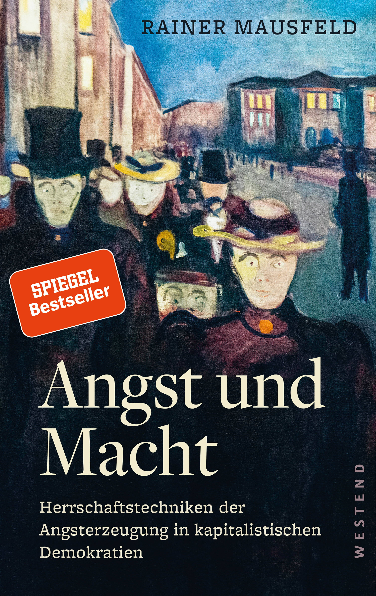
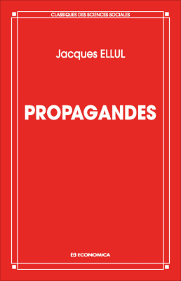
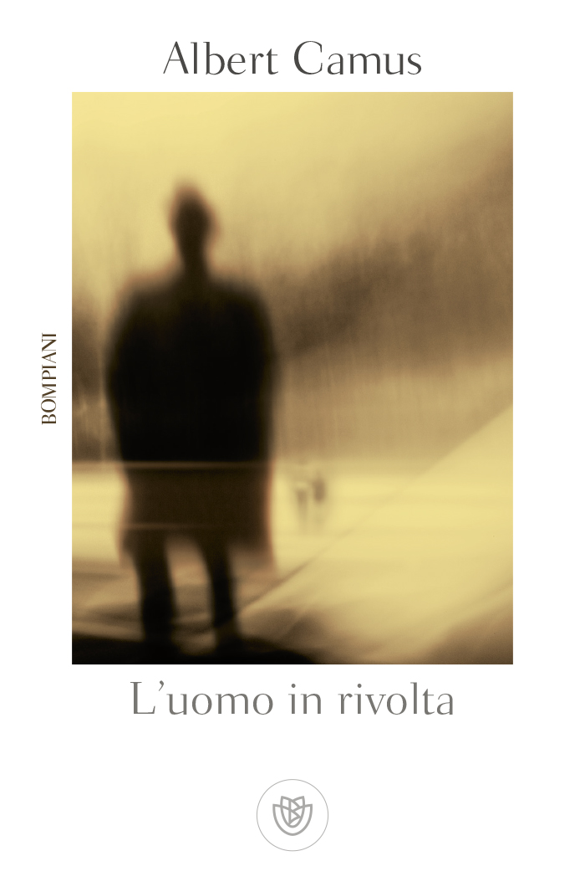
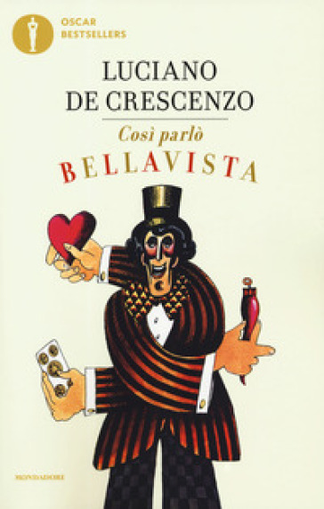
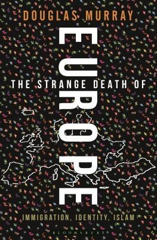

47:00 · 7 OPERE
L'invasione degli ultracorpi nel 2020.
Il filo del discorso
Il relatore usa i film dell’Invasione degli ultracorpi come metafora di una società che non riconosce più se stessa sotto la pressione della paura. Da questa immagine passa a una proposta di letture: Mausfeld, Ellul e Camus, poi soprattutto Il mondo nuovo di Huxley e 1984 di Orwell. Legge nei due romanzi il rapporto fra propaganda, silenzio, stabilità sociale e adesione alla autorità. Il percorso comprende giudizi sui programmi televisivi, una digressione sulle statistiche di mortalità e un ricordo di Così parlò Bellavista, quindi Murray e il tema della incompetenza politica. La conclusione difende libri e conoscenza come strumenti di autonomia. La scheda distingue la metafora letteraria e le opinioni del relatore dalle conclusioni sanitarie: età e patologie pregresse non escludono un ruolo causale della COVID-19, e la efficacia di un intervento non può essere confermata o negata con la sola successione degli eventi.
I libri nel discorso

Angst und Macht (Paura e potere)
Copertina: Angst und Macht. Herrschaftstechniken der Angsterzeugung in kapitalistischen Demokratien, Westend, 1 luglio 2019, 128 pagine, brossura, ISBN 9783864892813. Copertina originale tedesca fornita dall’editore; Paura e potere è la resa del titolo nel discorso, non una edizione italiana accertata.
Immagine autentica dell’opera, controllata visivamente; l’edizione di riferimento non è attribuita al filmato.
Mausfeld e Paura e potere espliciti; titolo originale e autore riscontrati sul catalogo Westend, senza attribuire una traduzione italiana.
Passaggio 3:32 ↗ · Fonti e libro ↗
Propagandes
Copertina: Economica · Classiques des sciences sociales · ISBN 9782717818482
Immagine autentica dell’opera, controllata visivamente; l’edizione di riferimento non è attribuita al filmato.
Jacques Ellul e Propaganda / Propagandes espliciti come lettura sui meccanismi della persuasione collettiva.
Passaggio 9:25 ↗ · Fonti e libro ↗
L’uomo in rivolta (L’Homme révolté)
Copertina: Originale francese 1951. Copertina autentica della edizione Bompiani, maggio 2002, introduzione di Corrado Rosso, traduzione di Liliana Magrini, ISBN 9788845252785. Il catalogo corrente indica 384 pagine; non si attribuisce tale paginazione a ogni ristampa o alla copia del relatore.
Immagine autentica dell’opera, controllata visivamente; l’edizione di riferimento non è attribuita al filmato.
Camus e L’uomo in rivolta espliciti, proposto come saggio filosoficamente impegnativo.
Passaggio 10:19 ↗ · Fonti e libro ↗Il mondo nuovo
Copertina della raccolta: Mondadori · Oscar Moderni · 2016
L’immagine mostra il volume Mondadori che riunisce Il mondo nuovo e Ritorno al mondo nuovo. Il collegamento nel video riguarda il primo romanzo, per allusione al titolo inglese; non identifica un’edizione usata dal relatore.
Brave New World / Il mondo nuovo esplicito; lettura della prefazione e commento su silenzio, propaganda e stabilità.
Passaggio 10:45 ↗ · Fonti e libro ↗
1984
Copertina: Newton Compton · edizione illustrativa
1984 e George Orwell espliciti, con lettura del finale e richiamo all’immagine dello stivale.
Passaggio 10:55 ↗ · Fonti e libro ↗
Così parlò Bellavista. Napoli, amore e libertà
Copertina: Prima pubblicazione 1977. Copertina autentica Mondadori, Oscar bestsellers, 1 ottobre 2019, 234 pagine, ISBN 9788804714910. Il libro è distinto dal film del 1984. Non si attribuisce questa ristampa alla lettura del relatore.
Immagine autentica dell’opera, controllata visivamente; l’edizione di riferimento non è attribuita al filmato.
Luciano De Crescenzo e Così parlò Bellavista espliciti nel ricordo di una fotografia umoristica.
Passaggio 24:24 ↗ · Fonti e libro ↗
The Strange Death of Europe. Immigration, Identity, Islam
Identificazione probabile
Copertina: Bloomsbury Continuum, 4 maggio 2017, prima edizione hardback, 352 pagine, ISBN 9781472942241. Copertina autentica reperita tramite ISBN e controllata visivamente, con autore, titolo, sottotitolo e marchio Bloomsbury; non si presume una edizione citata nel filmato.
Immagine autentica dell’opera, controllata visivamente; l’edizione di riferimento non è attribuita al filmato.
Douglas Murray esplicito, titolo nella trascrizione automatica The End of Europe; identificazione probabile con The Strange Death of Europe, passo non localizzato.
Passaggio 27:59 ↗ · Fonti e libro ↗